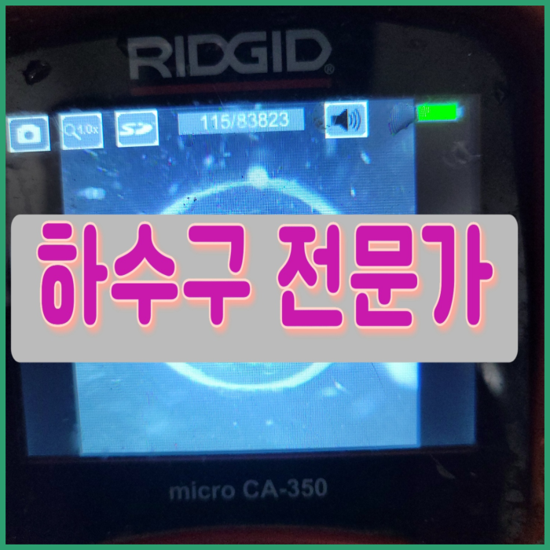
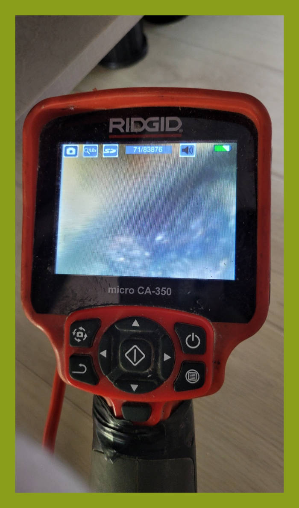
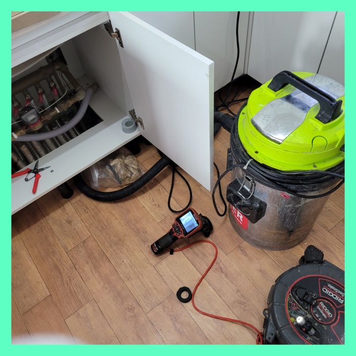
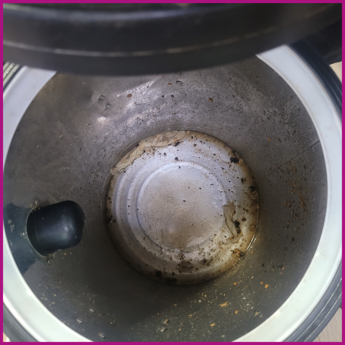
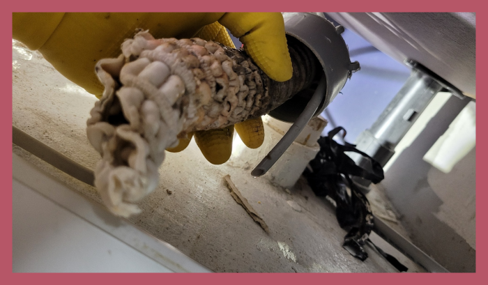
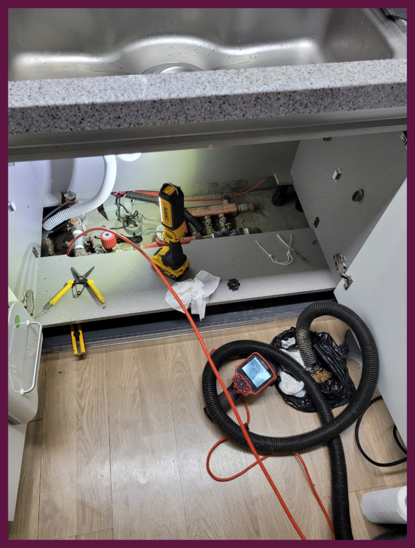
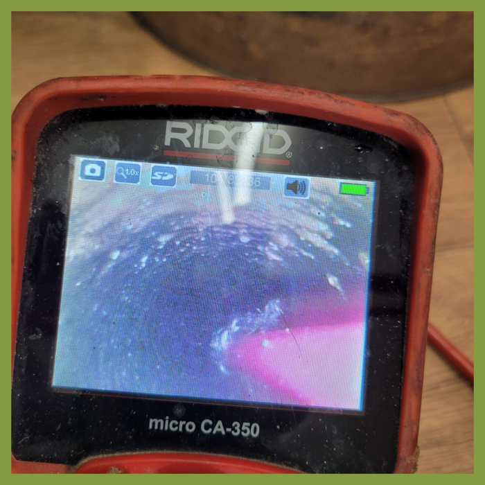

🏠 위례 싱크대하수관막힘 배수관수리 하수구 설비업체
용인 싱크대막힘 전문 시공 후기

📋 작업 개요
- 위치: 용인
- 서비스 유형: 싱크대막힘, 변기막힘, 하수구막힘, 배관막힘, 누수수리, 역류해결, 뚫는업체, 배관청소, 고압세척
- 작업 일시: 2023. 12. 13. 15:33
- 업체명: 하수구수사대 (010-5615-2118)
🔍 문제 상황
반갑습니다!
설비전문업체 "하수구수사대"를 찾아주셔서 고맙습니다^^
주변을 둘러보면 구매가능한 화학약품들로 막힌하수 수리가안되면 무슨해결책으로 하수배관을다시 원상태로돌릴수있을까요. 하수도로물이 내려가지않는다면 물사용에 문제가생기며 심각한상황에는 막막하실텐데요
조급한 나머지 무조건 행동을 취하고 다양한 업체를 찾아보고 이러다 보면 시간이 더 지연되어 상태가 좋아지기보다 악화되는 경우도 생깁니다.하수도 이럴때는 고민만하지 마시고 전문가에게 곧바로 문의하시길 추천드려요.
위례 싱크대하수관막힘 배수관수리 하수구 설비업체

🔎 원인 분석
💡 전문가 진단: 위례 싱크대하수관막힘 배수관수리 하수구 설비업체
상황을 직접 보기 전에 미리 정한 뒤 방문한 것이기 때문에 출동할 때 가지고 나가는 배수구 장비들도 그다지 많지 않을 것입니다. 이런 이유 때문에 보통 이상의배수구 막힘은 뚫어낼 수 없어 실패한 현장으로만 남게 되는 것입니다.
고객님께도 배출관배관 작업의 상황을 알려드리고 본격적으로 장비 세팅을 하기 시작하였습니다. 배관 스케일링 작업은 단단한 이물질까지도 분쇄를 하면서 제거를 하기 때문에 배출관배관의 본래 내부 모습을 되찾을 수 있도록 하는 것이 장점이라고 할 수 있습니다.
그런데도 불구하고 현장을 나가다 보면 이러한 사실들을 몰라서 직접 작업 시도를 해보시다가 배수관 구조를 제대로 몰라서 다른 문제까지 발생해버린 현장들을 정말 많이 보고 있습니다.
저렴하기만 한 비용으로 작업해 주는 곳을 알아보셨다가 손실을 입는 배관원인이 있다면 성의가 없었기 때문이에요. 분쇄 작업에는 상황들에 따른 기계 준비가 안 되어 있으면 시공이 어려워져요.
이와 같은 퇴수막힘으로 역류 현상이 계속 발생하게 된다면 아래층 누수가 이어질 수 있기 때문에 시급히 해결해야 되는 상황이라고 할 수 있습니다. 퇴수막힘을 뚫는 작업에서 가장 중요한 것은 막힌 위치와 원인을 정확하게 파악을 하는 것입니다.

🔧 작업 과정
단순히 스프링 기계 또는 석션기를 활용한 응급조치만 하였기에 별다른 문제점을 발견 못했다고 하셨어요. 진단 결과 근본적인 문제가 되는 물질들을 말끔히 제거해 드려야겠다고 생각하였는데요. 고압세척 등을 통해 하수 내부에 있는 이물질 덩어리들을 제거하였습니다.
배출구막힘의 원인이 되는 위치는 하나하나 파악해나가는 것이 중요합니다. 가장 확실하게 원인을 파악하는 방법은 내시경카메라를 통해서 하수관 속을 직접 확인하는 것이라 할 수 있는데요, 배관이 정상적으로 뚫려있고 물이 잘 흘러나가는 이물질이 없는 상태라면 본래 회색 또는 푸른색을 띄게 됩니다.
정상적으로 작동하면 굉장한 편리함을 제공하지만, 관리를 소홀히 하게 된다면 배출구의 배관에 이물질이 쌓여서 막히고 굳어버리게 됩니다. 만약 배출구 막힘 문제를 한 번이라도 경험해 보신 분들이라면 배출구배관이 막혔을 때 생기는 불편함을 익히 알고 계실 텐데요.
배출관원인은 상당히많기때문에 대처법들을 숙지하고있기는 어려운게 현실이죠.셀프시도는 옳지않기에 생각을다르게 해주시는게좋아요.실력자분들에게 문의해보시는게 가장빠르답니다.그러하나 찾아보더라도 수없이많은 업체들로인해 의뢰하려하더라도 어떤곳을 택해야되는지 어려우실겁니다
배수관이막혀버렸거나 쓰지못하게됐을때 외면하게되시면 안좋은문제가 일어나는데요.배수관막힘을 생각외로대부분의 사람들이대강뚫고 하루하루지나게되면 심각하지않겠지라는 판단하시고 내버려두시는일이 매우많이있습니다.
다른회사는 재발생해서 다시연락해도 모르쇠하기도합니다.그렇게되어버린다면 비용이만만치 않아서 참담하실겁니다.이런 정직한데는 그리많지않아요.
뚫고 물이 빠져나간다고 작업 끝난 것이 아니며 꼭 배수관배관 내시경 촬영으로 검사를 꼼꼼히 받아 보시는 것이 중요한데 보통 확인 작업을 빼고 마무리하시는 경우 남아있는 이물질들 제거가 확실히 끝나지 않고 다시 배수관배관 역류 막힘이 일어날 수 있습니다.
주말 오전 아침을 준비하다 이상함을 느끼고 배출구 살펴보니 물이 무척 느린 속도로 빠지고 있는 게 보였다는 고객님. 마침 사둔 약품이 있어 붓고 기다렸는데 물이 내려가는 속도에는 변화가 없었다고 하네요.


✅ 작업 완료
어딜 가더라도 미리 정해놓은 비용으로 일하는 곳도 많습니다. 아마 이런 하수관업체에서는 강도 있는 진행이 절실한 상황이더라도 나 몰라라 하고 비용안에서만 작업을 대충 때워버릴 것입니다.
어떤 현장이든 만족스러운 결과물을 고객님들에게 최대한 보여드리기 위해서 최신장비를 총동원하여 해결해 드리니 걱정마시고 언제든지 연락주시기 바랍니다.
#하수구막힘 #하수구뚫음 #하수구역류 #씽크대막힘 #싱크대역류 #오수관막힘 #하수구청소 #욕실하수구막힘 #변기막힘 #하수구뚫는비용 #싱크대수리 #화장실막힘




⚠️ 베란다 누수 및 방수 관리 방법
- ✅ 비가 많이 올 때 창틀 주변이나 아래층 천장에 얼룩이 생기는지 정기적으로 확인해 보세요.
- ✅ 우수관 주변 실리콘 마감이 들뜨거나 깨진 틈새가 있는지 손상 여부를 수시로 체크하세요.
- ✅ 베란다 바닥 타일의 줄눈(메지)이 소실되면 그 틈으로 물이 침투하여 누수가 유발됩니다.
- ✅ 누수 의심 증상 발견 시 방치하면 아래층 손실이 커지므로 즉시 전문가의 진단을 받으십시오.
💡 핵심 정리
- 확실한 장비 작업(내시경 점검 및 샤프트 스케일링)으로 원인을 뿌리 뽑습니다.
- 작업 후 1년 이내에 동일한 부위 재발 시 100% 무상 A/S 서비스를 보장합니다.
- 서울 · 경기 · 인천 전 지역에 24시간 언제든 긴급 출동할 수 있도록 항시 대기 중입니다.
❓ 자주 묻는 질문 (FAQ)
🚨 용인 싱크대막힘 문제로 고민이신가요?
정확한 원인 진단과 확실한 시공으로 재발 없는 해결을 약속드립니다.
24시간 긴급 출동 | 서울 · 경기 · 인천 전지역 | 1년 내 재발 시 무상 A/S